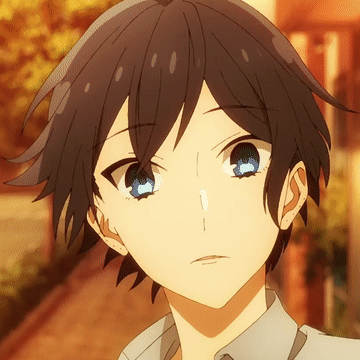
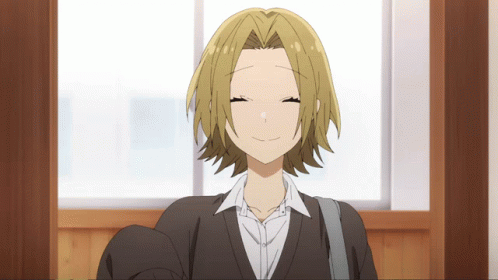

𝙲𝚑𝚊𝚛𝚊𝚌𝚝𝚎𝚛 |
𝙽𝚊𝚖𝚎 |
𝙳𝚎𝚜𝚌𝚛𝚒𝚙𝚝𝚒𝚘𝚗 |

Hori |
Kyouko Hori seems like an average teenage girl, but she has a different side outside of school that she wants no one else to ever find out about. Brought up in a household where both her parents are absent from working, she needs to take care of the house and her little brother, unable to lead a normal social life. Likewise, there is her classmate Izumi Miyamura, who has a different side out of school that remains hidden from others. When the two meet unexpectedly, they discover each others' secrets and develop a special friendship. |
|

Remi |
Remi Ayasaki (綾崎 レミ Ayasaki Remi?) is a third year in Katagiri Senior High School as a student in Class 3-5. She is a member of the Student Council and is known as Kakeru Sengoku's girlfriend. However, her role in the council is more of a mascot and she is shown to do little to no work at all. |
|

| Miyamura |
Izumi Miyamura (宮村 伊澄 Miyamura Izumi?) is the male protagonist of the Horimiya series. He is a student in Class 3-1 of Katagiri Senior High School.
|
|

| Yuki |
Yuki Yoshikawa (吉川 由紀 Yoshikawa Yuki?) is a supporting character in the Horimiya series. She is the best friend of Kyouko Hori who also attends Katagiri Senior High School. |
|

Kakeru |
Kakeru Sengoku (仙石 翔, Sengoku Kakeru) is the charismatic president of the student council of Katagiri Senior High School who is enrolled in class 3-3, the childhood friend of Kyouko Hori and the boyfriend of Remi Ayasaki. |
|